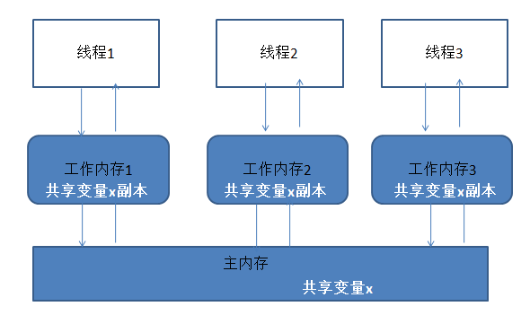

[转]Java多线程共享变量控制
类别：JAVA
一、可见性
如果一个线程对共享变量值的修改，能够及时的被其他线程看到，叫做共享变量的可见性。如果一个变量同时在多个线程的工作内存中存在副本，那么这个变量就叫共享变量
二、JMM(java内存模型)
多个线程同时对主内存的一个共享变量进行读取和修改时，首先会读取这个变量到自己的工作内存中成为一个副本，对这个副本进行改动之后，再更新回主内存中变量所在的地方。 （由于CPU时间片是以线程为最小单位，所以这里的工作内存实际上就是指的物理缓存，CPU运算时获取数据的地方；而主内存也就是指的是内存，也就是原始的共享变量存放的位置）
两条规定：- 线程对共享变量的所有操作必须在工作内存中进行，不能直接操作主内存
- 不同线程间不能访问彼此的工作内存中的变量，线程间变量值的传递都必须经过主内存
- 线程1将更改x后的值更新到主内存
- 主内存将更新后的x的值更新到线程2的工作内存中x的副本
- 线程对工作内存中副本的更改能够及时的更新到主内存上
- 其他线程能够及时的将主内存上共享变量的更新刷新到自己工作内存的该变量的副本上
三、synchronized实现可见性
synchronized 实际上是对访问修改共享变量的代码块进行加互斥锁，多个线程对synchronized代码块的访问时，某一时刻仅仅有一个线程在访问和修改代码块中的内 容（加锁），其他所有的线程等待该线程离开代码块时（释放锁）才有机会进入synchronized代码块。 所以某一个线程进入synchronized代码块前后，执行过程入如下：- 线程获得互斥锁
- 清空工作内存
- 从主内存拷贝共享变量最新的值到工作内存成为副本
- 执行代码
- 将修改后的副本的值刷新回主内存中
- 线程释放锁
多个线程之间执行共同的代码块（访问修改共享变量），由于线程交叉执行，最终共享变量的最后值可能有多种结果：
public class SynchronizedTest {
private boolean ready = false;
private int result = 0;
private int number = 1;
public void write(){
ready = true;
number = 2;
}
public void read(){if(ready){
result = number * 3;
}
System.out.println("result is " + result);
}
private class TestThread extends Thread{
private boolean flag;
public TestThread(boolean flag){
this.flag = flag;
}
@Override
public void run() {
// TODO Auto-generated method stub
if(flag){
write();
}else{
read();
}
}
}
public static void main(String[] args){
SynchronizedTest test = new SynchronizedTest();
test.new TestThread(true).start();
test.new TestThread(false).start();
}
}
如上代码，由于两个线程交叉执行，最后result的结果可能是0或者6或者3
共享变量不可见主要有下列原因：
- 线程的交叉执行
- 重排序
- 共享变量未能及时更新
四、volatile实现可见性（jdk 1.5后）
volatile如何实现可见性?volatile变量每次被线程访问时，都强迫线程从主内存中重读该变量的最新值，而当该变量发生修改变化时，也会强迫线程将最新的值刷新回主内存中。这样一来，不同的线程都能及时的看到该变量的最新值。
但是volatile不能保证变量更改的原子性：
比如number++，这个操作实际上是三个操作的集合（读取number，number加1，将新的值写回number），volatile只能保证每一 步的操作对所有线程是可见的，但是假如两个线程都需要执行number++，那么这一共6个操作集合，之间是可能会交叉执行的，那么最后导致number 的结果可能会不是所期望的。
所以对于number++这种非原子性操作，推荐用synchronized：
synchronized（this）{
number++;
}
public class VolatileTest {
public static int number = 0;
public void increase(){
try {
Thread.sleep(300);
} catch (InterruptedException e) {
// TODO Auto-generated catch block
e.printStackTrace();
}
number++;
}
/**
* @param args
*/
public static void main(String[] args) {
final VolatileTest test = new VolatileTest();
for(int i = 0 ; i < 500 ; i++){
new Thread(new Runnable() {
@Override
public void run() {
test.increase();
}
}).start();
}
//若当期依然有子线程没有执行完毕
while(Thread.activeCount() > 1){
Thread.yield();//使得当前线程（主线程）让出CPU时间片
}
System.out.println("number is " + number);
}
}
对于自增之类的非原子性操作，只能通过如下方式保证可见性：
- synchronized
- ReentrantLock
- AtomicInteger
public void increase(){
try {
Thread.sleep(300);
} catch (InterruptedException e) {
// TODO Auto-generated catch block
e.printStackTrace();
}
synchronized(this){
number++;
}
}
ReentrantLock修改方式如下：
public class VolatileTest {
public static int number = 0;
public Lock lock = new ReentrantLock();
public void increase(){
try {
Thread.sleep(300);
} catch (InterruptedException e) {
// TODO Auto-generated catch block
e.printStackTrace();
}
lock.lock();
try{
number++;//这块的代码实际项目中可能会出现异常，所以要捕获
}finally{
lock.unlock();//用try finally块保证Unlock一定要执行
}
}
。。。
}
AtomicInteger，一个提供原子操作的Integer的类。在Java语言中，++i和i++操作并不是线程安全的，在使用的时候，不可避免的会用到synchronized关键字。而AtomicInteger则通过一种线程安全的加减操作接口。
修改如下:
package com.mooc.test;
import java.util.concurrent.atomic.AtomicInteger;
public class VolatileTest {
public static AtomicInteger number = new AtomicInteger(0);
public void increase(){
try {
Thread.sleep(300);
} catch (InterruptedException e) {
// TODO Auto-generated catch block
e.printStackTrace();
}
number.getAndIncrement();//获得当前值并且加1
}
/**
* @param args
*/
public static void main(String[] args) {
final VolatileTest test = new VolatileTest();
for(int i = 0 ; i < 500 ; i++){
new Thread(new Runnable() {
@Override
public void run() {
test.increase();
}
}).start();
}
//若当期依然有子线程没有执行完毕
while(Thread.activeCount() > 1){
Thread.yield();//使得当前线程（主线程）让出CPU时间片
}
System.out.println("number is " + number.get());
}
}
五、volatile适用情况
- 对变量的写入操作不依赖当前值 比如自增自减、number = number + 5等（不满足）
- 当前volatile变量不依赖于别的volatile变量 比如 volatile_var > volatile_var2这个不等式（不满足）
六、synchronized和volatile比较
- volatile不需要同步操作，所以效率更高，不会阻塞线程，但是适用情况比较窄
- volatile读变量相当于加锁（即进入synchronized代码块），而写变量相当于解锁（退出synchronized代码块）
- synchronized既能保证共享变量可见性，也可以保证锁内操作的原子性；volatile只能保证可见性